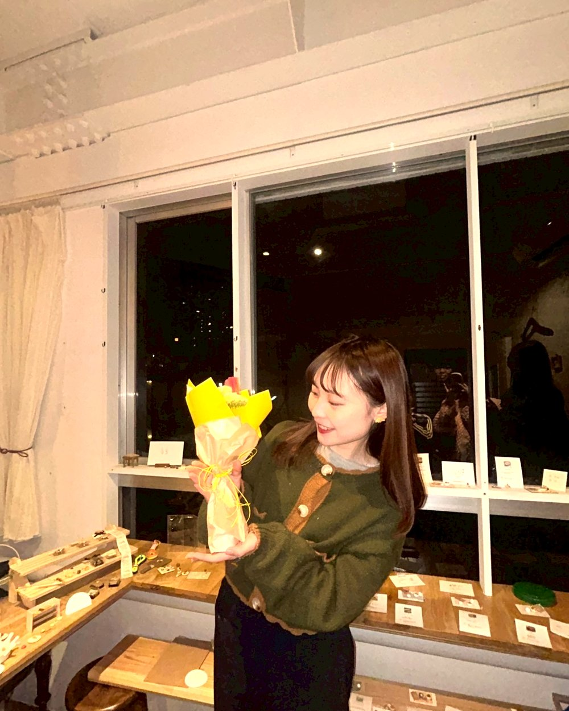

てのこやについて
忙しい毎日の中で、手を動かしている時間だけは、不思議と心が落ち着く。
粘土をこねたり、絵を描いたり、ノートに言葉を書き留めたり。
手から生まれるものには、完璧じゃないからこその温もりがあります。
てのこやは、そんな手仕事を楽しみ、誰かと分かち合うために生まれた場所です。

Profile
Miniature Artist & Creator
はじめまして、Rio です。
幼い頃から、手づくりや細かい作業が好き。現在は会社員として働きながら、ミニチュア・イラスト・デザイン・ことばを通して活動しています。
「手から生まれる小さなしあわせ」を、作品や体験を通して届けていきます。